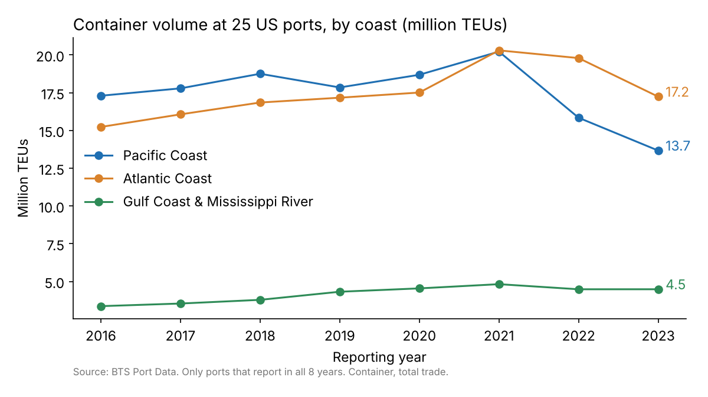
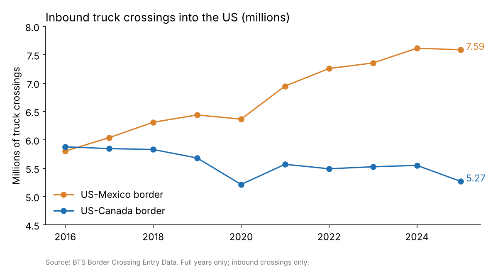
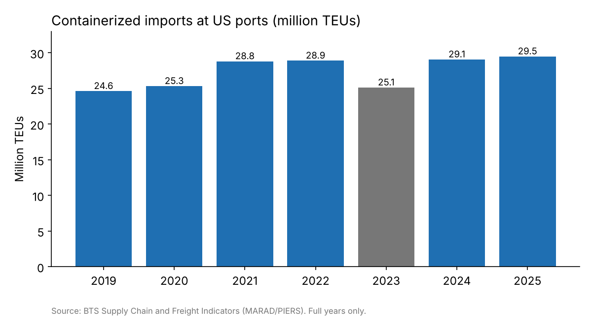

West Coast ports lost container volume
Container volume at West Coast ports fell 32% from 2021 to 2023 (20.2 million to 13.7 million TEUs), more than the Atlantic Coast (down 15%) or the Gulf Coast (down 7%).

Five public datasets show where freight has moved and what shoppers have shifted to. None of them can show whether capacity kept up, so each finding below says what its data can and cannot tell you.
Container volume at West Coast ports fell 32% from 2021 to 2023 (20.2 million to 13.7 million TEUs), more than the Atlantic Coast (down 15%) or the Gulf Coast (down 7%).

Inbound truck crossings from Mexico rose 31% from 2016 to 2025 (5.8 million to 7.6 million), while crossings from Canada fell 10% (5.9 million to 5.3 million).

US container imports fell 13% in 2023 (28.9 million to 25.1 million TEUs) and were back to 29.5 million by 2025.

E-commerce's share of US retail sales rose from 7.7% in early 2016 to 16.0% in Q2 2020, eased to 13.7% by Q2 2022, and reached 17.9% in 2026, more than double the 2016 share.

Retail sales in 11 Colorado counties grew 70% from 2016 to 2025 ($157 billion to $266 billion), but growth slowed to 0.5%, 1.3% and 3.2% in 2023, 2024 and 2025 after an 11.5% jump in 2022.

Freight has moved: away from West Coast ports and toward Gulf and Atlantic ports and the Mexico border. Consumers keep shifting toward online buying while overall retail growth slows.
These datasets cannot measure whether capacity is keeping up with demand. Each one shows only one side.
All data is public. Nothing here is confidential.